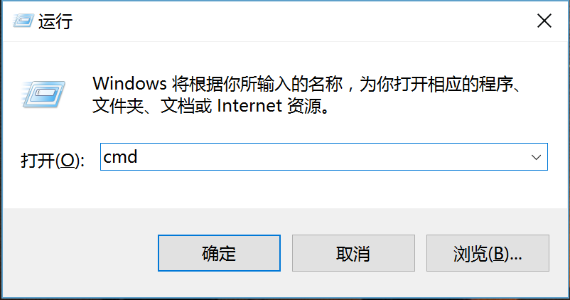
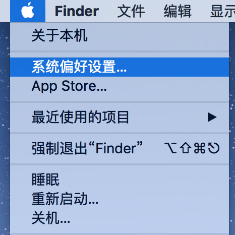
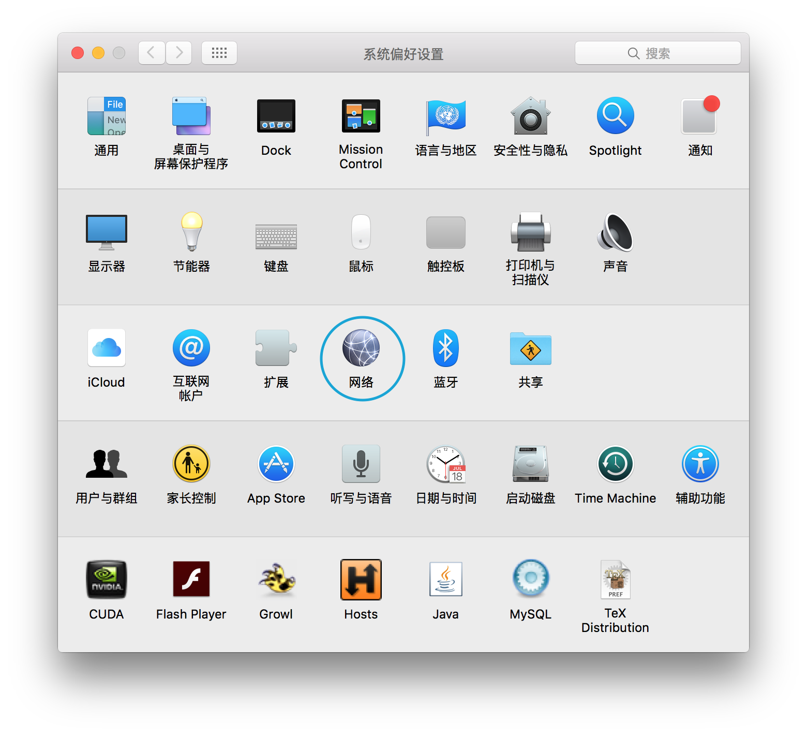
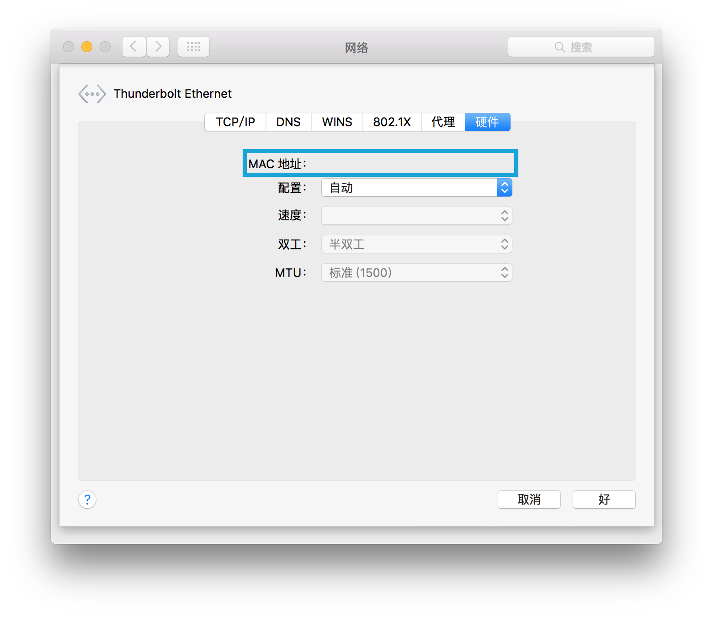
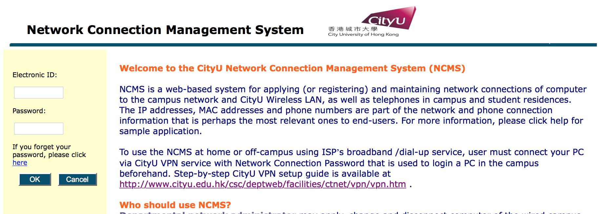
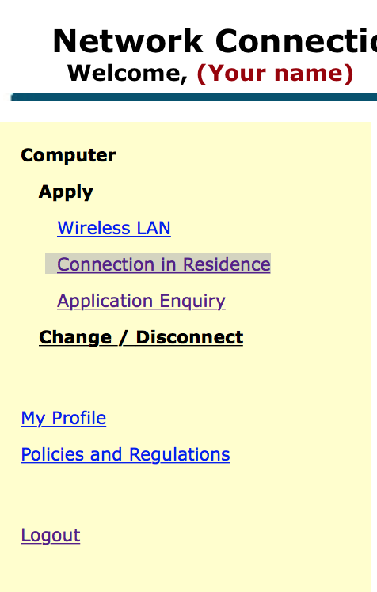
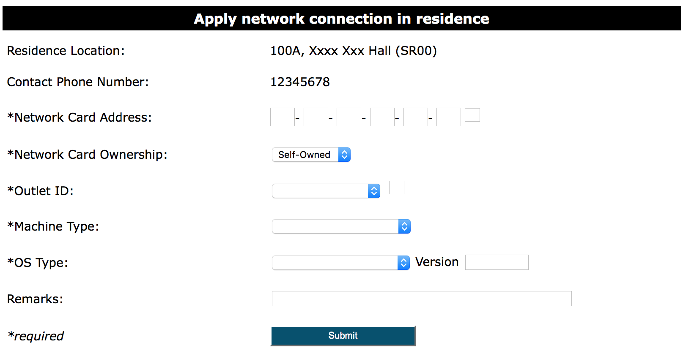
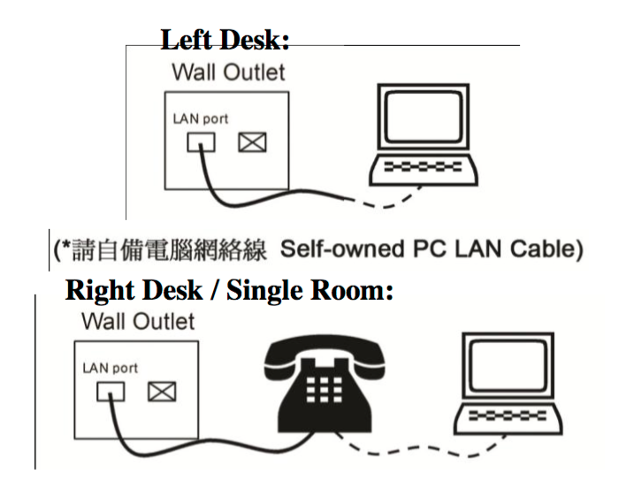

Press Win + R to open "Run" window.
Type "cmd" and press Enter.
You should see the black command prompt window.
Type getmac /v in the command prompt window and press Enter. It should return you a list of adapters.
Microsoft Windows [版本 10.0.10525] (c) 2015 Microsoft Corporation. All rights reserved. C:\Users\admin>getmac /v 连接名 网络适配器 物理地址 传输名称 =============== =============== =================== ========================================================== 以太网 Intel(R) PRO/10 00-1C-42-XX-XX-XX \Device\Tcpip_{5EB740D5-76B4-46D7-A93B-XXXXXXXXXXXX} C:\Users\admin>_
As highlighted in the figure, find "Ethernet" or "以太网" or "乙太網絡" in the list, and the string under "Physical address" column is your MAC address. Remember it CORRECTLY!
Open terminal.
Type 'ifconfig' and press Enter.
user@computer:~$ ifconfig eth0 Link encap:Ethernet HWaddr 00:1c:42:xx:xx:xx inet addr:10.111.111.111 Bcast:10.111.111.255 Mask:255.255.255.0 inet6 addr: fdb2:2c26:f4e4:0:xxxx:xxxx:xxxx:xxxx/64 Scope:Global inet6 addr: fdb2:2c26:f4e4:0:xxxx:xxxx:xxxx:xxxx/64 Scope:Global inet6 addr: fe80::21c:42ff:fe07:f6f8/64 Scope:Link UP BROADCAST RUNNING MULTICAST MTU:1000 Metric:1 RX packets:100 errors:0 dropped:0 overruns:0 frame:0 TX packets:101 errors:0 dropped:0 overruns:0 carrier:0 collisions:0 txqueuelen:1000 RX bytes:9314 (9.3 KB) TX bytes:15671 (15.6 KB) lo Link encap:Local Loopback inet addr:127.0.0.1 Mask:255.0.0.0 inet6 addr: ::1/128 Scope:Host UP LOOPBACK RUNNING MTU:65536 Metric:1 RX packets:100 errors:0 dropped:0 overruns:0 frame:0 TX packets:100 errors:0 dropped:0 overruns:0 carrier:0 collisions:0 txqueuelen:0 RX bytes:24050 (24.0 KB) TX bytes:24050 (24.0 KB) user@computer:~$
As shown in the figure, your ethernet MAC address should be in "eth**" section, and to the right of "HWaddr". Remember it CORRECTLY!
Seems that your Mac device doesn't have an ethernet port, and you need an adapter. Why not buying a Thunderbolt to Gigabit Ethernet Adapter from Apple online store?
Or if you have a new MacBook, you need an Apple USB Ethernet Adapter and a USB-C to USB Adapter, which brings inconvenience. In this case, I suggest you setup Wi-Fi in your room.
Open System Preference
Choose "Internet"
Plug in your Thunderbolt or USB Adapter. After seeing your adapter appears in the list at left, choose your adapter.
Select your Ethernet Adapter from the list at left.
Press "Advanced..." button at right-bottom corner.
Under "Hardware" tab, you are able to see your MAC Address. Remember it CORRECTLY!
Find any Wi-Fi access in CityU (usually common room). Open CityU NCM (https://www6.cityu.edu.hk/ncm/) and login with your CityU Student EID and password.
Choose "Connection in Residence" in left menu.
You should be required to agree their terms. If you have read and agree with it, check the checkbox and continue.
You should see a form at the right.
Please confirm the correctness of your "Residence Location" and "Contact Phone Number".
In "Network Card Address" section, fill in your MAC address after double checking.
| *Network Card Address: | - - - - - |
In "Network Card Ownership" section, choose "Self-Owned".
| *Network Card Ownership: |
In "Outlet ID" section, choose whether your bed is at left or right.
| *Outlet ID: |
In "Machine Type" section, choose "PC".
| *Machine Type: |
In "OS Type" section, you can choose any one of them and it doesn't affect your Internet application. But for convience, I suggest you to choose " WINDOWS XP WINDOWS 7 WINDOWS 8 WINDOWS 10 MAC OS LINUX " which should be your OS type.
For "Version", you can fill anything in it and it doesn't affect your Internet application. For example, "10".
| *OS Type: | Version |
Leave blank for "Remarks".
| Remarks: |
Make sure you filled in all blanks with "*". Submit the form.
You will receive an email indicating that CityU received your application. All you need to do is wait. Normally, it takes no more than few hours to get your network works.
You are supposed to have a network cable. If not, just buy one from homey kitchen.
If you are at the side with telephone, please connect one side of the cable to the telephone. If not, plug one side of the cable in the LAN port on the wall directly.
Connect your USB or Thunderbolt Ethernet Adapter first. Plug the other side of the cable in your adapter.
Plug the other side of the cable in your computer's ethernet port.
Test the connection after few hours.
Should you have any questions, please check troubleshot page.